Select a cable for more information.

802.11 Standards
Wireless LAN standards (Wi-Fi). Includes 802.11a/b/g/n/ac/ax/be. Speeds range from 11 Mbps (802.11b) to 9.6 Gbps (802.11ax/Wi-Fi 6). Operates in 2.4, 5, and 6 GHz bands.
The 802.11 family defines WLAN protocols. 802.11a: 5 GHz, 54 Mbps; 802.11b: 2.4 GHz, 11 Mbps; 802.11g: 2.4 GHz, 54 Mbps; 802.11n: 2.4/5 GHz, 600 Mbps with MIMO; 802.11ac (Wi-Fi 5): 5 GHz, up to 3.5 Gbps with MU-MIMO; 802.11ax (Wi-Fi 6): 2.4/5/6 GHz, up to 9.6 Gbps, OFDMA, better efficiency; 802.11be (Wi-Fi 7): up to 46 Gbps, 320 MHz channels. Security evolves from WEP to WPA3. Channel widths: 20/40/80/160 MHz. Beamforming and mesh support in later standards.
802.3 Standards
Ethernet standards for wired LANs. Includes Fast Ethernet (100 Mbps), Gigabit Ethernet (1 Gbps), and 10/40/100 Gbps variants. Uses twisted pair or fiber cables.
IEEE 802.3 defines Ethernet. Key amendments: 802.3u (Fast Ethernet, 100 Mbps over Cat5); 802.3ab (Gigabit Ethernet, 1000BASE-T over Cat5e); 802.3an (10GBASE-T over Cat6a); 802.3ae (10G over fiber); 802.3ba (40/100G); 802.3bs (200/400G). PoE: 802.3af (15W), 802.3at (30W), 802.3bt (90W). Topologies: star, with switches. CSMA/CD legacy, now full-duplex. Auto-negotiation for speed/duplex. VLANs via 802.1Q.
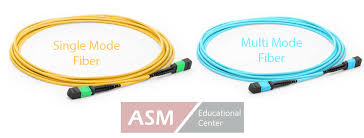
Single-mode Fiber
Fiber optic cable with a single light path. Supports long distances (up to 100 km) and high speeds (10 Gbps+). Used in WANs and backbone networks.
Core diameter: 8-10 μm. Wavelengths: 1310nm (O-band), 1550nm (C-band) for minimal attenuation. Types: OS1 (indoor, up to 10km), OS2 (outdoor, up to 200km). Low dispersion, laser light sources (FP/DFB lasers). Connectors: SC/LC with UPC/APC polish (APC for angled, reduces reflections). Attenuation: 0.4 dB/km at 1310nm, 0.2 dB/km at 1550nm. Used in telecom, metro networks, DWDM for multiplexing.
Multimode Fiber
Fiber optic cable with multiple light paths. Supports shorter distances (up to 2 km) and high speeds (10 Gbps+). Used in LANs and data centers.
Core diameter: 50μm (OM2/3/4/5) or 62.5μm (OM1). Wavelengths: 850nm (VCSEL lasers), 1300nm. Grades: OM1 (100 Mbps, 2km), OM2 (1 Gbps, 550m), OM3 (10 Gbps, 300m), OM4 (10 Gbps, 400m; 40/100G, 150m), OM5 (wideband, SWDM support). Modal dispersion limits distance. Cheaper transceivers than single-mode. Bend-insensitive variants available.
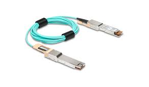
Direct Attach Copper (DAC)
High-speed copper cable with fixed transceivers. Used for short-distance (up to 7m) data center connections at 10/40/100 Gbps. Cost-effective alternative to fiber.
Passive DAC: no active components, low power (<0.5W), lengths up to 5-7m for 10G, shorter for higher speeds. Active DAC: amplifiers for longer reach (up to 15m), higher power (1-1.5W). Form factors: SFP+, QSFP+, QSFP28. Twinax cable inside. Low latency (~0.1μs). No optics, so cheaper than AOC (Active Optical Cable). Used in ToR switches, server interconnects. Breakout cables for 40G to 4x10G.
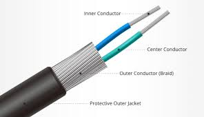
Twinaxial Cable
Two inner conductors for high-speed data (10/40 Gbps). Used in DAC cables for data centers. Offers low latency and high bandwidth for short distances.
Balanced pair conductors with foil/braid shielding. Impedance: 100 ohm. Used in SFP+/QSFP DACs. Advantages: lower cost, power than fiber; better than twisted pair for high freq. Lengths: up to 10m for 10G, 5m for 25G+. Applications: HPC, storage, networking racks. Variants: 26-30 AWG for flexibility. Crosstalk minimized by design.
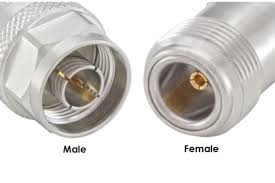
Coaxial Cable
Single copper conductor with shielding. Used for cable internet/TV (example: RG-6). Supports high-frequency signals with low loss, up to 1 Gbps over short distances.
Structure: center conductor, dielectric, shield, jacket. Types: RG-6 (75 ohm, broadband), RG-59 (thinner, shorter runs), RG-11 (longer distances). Impedance: 75 ohm for video. Attenuation: increases with frequency/length. Connectors: F-type, BNC. Uses: DOCSIS for cable modems (up to 10 Gbps shared), MoCA for home networking. Shielding protects against EMI. Plenum-rated versions available.
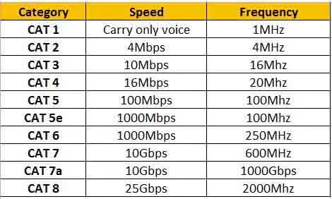
Cable Speeds
Cat5e: 1 Gbps (100m); Cat6: 10 Gbps (55m); Cat6a/Cat7: 10 Gbps (100m); Fiber: 10 Gbps+ (km); Coaxial: up to 1 Gbps; DAC/Twinax: 10/40/100 Gbps (short distances).
Twisted Pair: Cat5 (100 Mbps, 100m), Cat5e (1 Gbps, 100m, 350 MHz), Cat6 (10 Gbps, 55m, 500 MHz), Cat6a (10 Gbps, 100m, 500 MHz, better shielding), Cat7 (10 Gbps, 100m, 600 MHz, STP), Cat8 (40 Gbps, 30m, 2000 MHz). Fiber: 10G (OM3:300m, OS2:10km), 40G (OM4:150m, OS2:10km), 100G (OM5:150m, OS2:2km SR). Coax: DOCSIS 3.1 (10 Gbps down/1 Gbps up shared). Factors: crosstalk, attenuation, environment.
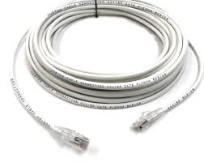
Plenum Cable
Cables with fire-resistant jackets for use in plenum spaces (example: air ducts). Meets safety standards. More expensive than non-plenum cables.
Jacket material: low-smoke zero-halogen (LSZH) or fluorinated ethylene propylene (FEP). Complies with NFPA 90A, UL 910 (Steiner Tunnel Test). Low flame spread, minimal toxic smoke. Used in HVAC plenums, raised floors. Examples: CMP-rated twisted pair/fiber. Cost: 20-50% more than PVC. Alternatives: riser (CMR) for vertical shafts.
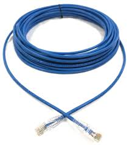
Non-plenum Cable
Standard cables for non-plenum areas. Less expensive but not fire-resistant. Used in walls or conduits. Common for Cat5e/Cat6 installations.
Jacket: PVC (polyvinyl chloride) or PE for outdoor. Ratings: CM (general), CMR (riser). Higher smoke/toxins in fire. Cheaper, flexible. Not for air-handling spaces per code. Use in patch panels, walls, conduits. UV-resistant for outdoor. Shielded (F/UTP) variants for EMI.

Ethernet Transceiver
Converts electrical signals to optical or vice versa for Ethernet networks. Supports 1/10/40/100 Gbps. Used with SFP/QSFP modules for flexible connectivity.
Types: GBIC (older, 1G), SFP (1G), SFP+ (10G), QSFP (40G), QSFP28 (100G), QSFP-DD (400G). Media: copper (RJ45), fiber (LC/SC). Reach: SR (short, multimode), LR (long, single-mode), ER (extended). Power: <1W for SFP. Hot-swappable, MSA compliant. Diagnostics: DOM for monitoring temp, power, etc. Used in switches, NICs.
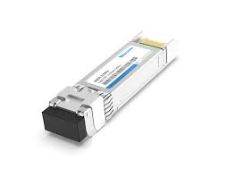
Fibre Channel Transceiver
Used in storage area networks (SANs). Supports 8/16/32 Gbps. Connects servers to storage devices using fiber or copper with SFP/QSFP modules.
Speeds: 1/2/4/8/16/32/64/128 GFC. Topologies: point-to-point, arbitrated loop (FC-AL), switched fabric (FC-SW). Protocols: SCSI over FC (FCP). Reach: SW (short wave, multimode, 500m), LW (long wave, single-mode, 10km). Zoning for security. Low latency (<1μs). Used in enterprise storage, backups. Converged with Ethernet (FCoE).
SFP (Small Form-factor Pluggable)
Compact transceiver for 1-10 Gbps Ethernet or Fibre Channel. Hot-swappable, supports fiber or copper cables. Used in switches and routers.
Dimensions: 8.5x13.4x56.5mm. Variants: SFP (1G), SFP+ (10G), SFP28 (25G), SFP56 (50G). Interfaces: SX (850nm MMF, 550m), LX (1310nm SMF, 10km), ZX (1550nm, 80km), T (copper RJ45, 100m). Power: 1W max. EEPROM for identification. BiDi (bidirectional) for single fiber. CWDM/DWDM for wavelength multiplexing.
QSFP (Quad SFP)
High-density transceiver for 40/100 Gbps Ethernet or Fibre Channel. Supports fiber or DAC cables. Used in data centers for high-speed links.
4 lanes for higher bandwidth. Variants: QSFP+ (40G), QSFP28 (100G), QSFP56 (200G), QSFP-DD (400G, 8 lanes), OSFP (400G alternative). Interfaces: SR4 (MMF, 100m), LR4 (SMF, 10km), PSM4 (parallel SMF). Power: up to 3.5W (QSFP28). Breakout to 4x SFP. PAM4 modulation for higher speeds. Used in spine-leaf architectures.
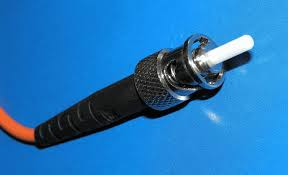
SC (Subscriber Connector)
Fiber optic connector with push-pull coupling. Used in telecom and data networks. Supports single-mode and multimode fiber.
2.5mm ferrule. Duplex common (clipped pair). Polish: PC (physical contact), UPC (ultra), APC (angled, 8° for low reflection -60dB). Insertion loss: 0.2dB. Durable, up to 1000 matings. Standardized by TIA-604-3. Used in PON, CATV. Larger than LC, but reliable.
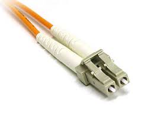
LC (Local Connector)
Small fiber optic connector with latch mechanism. Common in high-density applications like data centers. Supports single-mode and multimode fiber.
1.25mm ferrule, half size of SC. Duplex with clip. Polish: UPC/APC. Loss: 0.1-0.2dB. High density (twice SC). RJ-style latch. Standardized by TIA-604-10. Used in SFP transceivers, patch panels. Pull-proof design.
ST (Straight Tip)
Fiber optic connector with bayonet mount. Used in legacy networks. Supports multimode fiber, less common in modern installations.
2.5mm ferrule, twist-lock bayonet. Simplex only. Polish: PC/UPC. Loss: 0.3dB. Durable for industrial. Originated from AT&T. Less used now due to non-push-pull. Max 500 matings. Common in older multimode LANs.
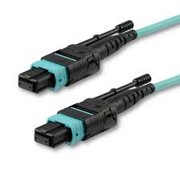
MPO (Multi-fiber Push On)
Fiber optic connector for multiple fibers (12-24). Used in high-speed data centers for 40/100 Gbps links. Supports multimode and single-mode fiber.
MT ferrule, push-pull. Fibers: 8/12/16/24/32. Polarity: Type A (straight), B (reversed), C (pair flipped) for proper Tx/Rx alignment. Polish: APC for SMF. Loss: 0.35dB max. Used in QSFP for parallel optics (SR4/PSM4). High density, quick install. Cleaning critical due to multiple fibers.
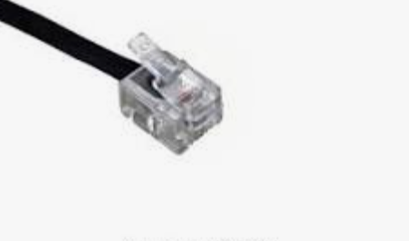
RJ11
Phone line connector for DSL or landline. 6P2C/6P4C configuration. Used in telecommunications, not for Ethernet.
6 positions, 2-4 contacts. Wiring: pins 3/4 for single line, 2/5 for second. Used in modems, fax. DSL: filters split voice/data. Smaller than RJ45. Crimp tool required. Legacy, but still in POTS (plain old telephone service).
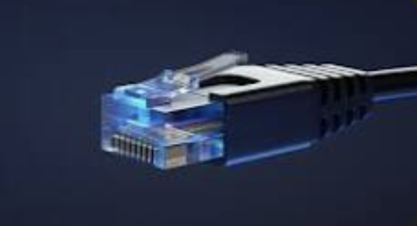
RJ45
Ethernet connector for twisted pair cables (Cat5e/Cat6/Cat7). 8P8C configuration. Supports 1-10 Gbps in LANs and PoE.
8 positions, 8 contacts. Wiring standards: T568A (green/orange pairs swapped vs B), T568B (common). Straight-through for device-switch, crossover for device-device (auto-MDIX now common). Shielded for STP. Tools: crimper, tester for continuity. Supports PoE. Cat ratings determine performance.
F-type
Coaxial connector for cable TV, satellite, and cable modems. Supports high-frequency signals up to 1 Gbps. Common in RG-6 cables.
Threaded, 3/8-32 coupling. Compression or crimp attachment. Weatherproof variants. Frequency: up to 3 GHz. Used in MoCA (Ethernet over coax). Quad-shield for better EMI. Torque: 25-30 in-lbs. Common in home installations for broadband.